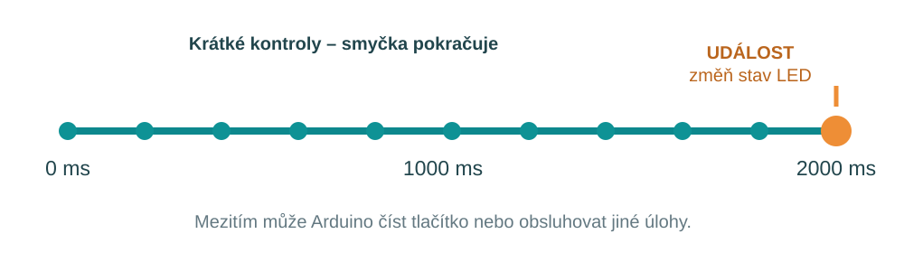

Dvě LED a tlačítko
LED1 bliká 2 s zapnuto a 2 s vypnuto. LED2 svítí pouze při stisku tlačítka. Nejprve použij delay().
Ověř: Reaguje LED2 pokaždé? Vyzkoušej krátký stisk.
Praxe – Arduino | 3. ročník · neblokující kód, delay() a millis()
delay() zpomaluje reakce programu.millis().delay().Arduino, delay(), millis(), neblokující kód, unsigned long, časový interval, předchozí čas, loop(), LED, tlačítko, INPUT_PULLUP, multitasking.
Arduino s jedním běžícím programem může působit, jako by dělalo více věcí současně. Klíčem je nečekat na místě, ale průběžně kontrolovat čas a vstupy.
Funkce delay(2000) pozastaví běh hlavního programu na 2 sekundy. Během této doby se v programu běžně nekontroluje tlačítko ani se neaktualizují další výstupy. Proto může krátký stisk tlačítka zůstat bez odezvy.
digitalWrite(13, HIGH);
delay(2000);
digitalWrite(13, LOW);
delay(2000);Dvě sekundy svítí a další dvě sekundy nesvítí.
Má svítit pouze při stisku, ale během delay() může program stisk přehlédnout.
delay() zastaví vykonávání dalších běžných příkazů v hlavní smyčce, ale neznamená, že se v procesoru zastaví veškerý hardware nebo přerušení.millis() vrací počet milisekund od spuštění aktuálního programu. Získání hodnoty je rychlé a nečeká na uplynutí intervalu. Po resetování Arduina začíná počítat znovu.
Například millis() == 1000 přibližně sekundu po startu.
Pro dvě sekundy použij časový interval 2000.
Pro časové údaje používej vhodný 32bitový nezáporný typ.
void setup() {
Serial.begin(9600);
}
void loop() {
unsigned long cas = millis();
Serial.println(cas);
delay(500); // jen zpomaleni vypisu do monitoru
}millis() program neblokuje. V příkladu výše je delay(500) pouze kvůli čitelnému výpisu do sériového monitoru; u neblokujícího řešení by se časoval i tento výpis.Místo „počkej dvě sekundy“ položí program při každém průchodu loop() otázku: „Uplynuly už dvě sekundy od poslední změny?“ Pokud ne, hned může zkontrolovat další úlohy.

millis() kontrolujeme běžící čas opakovaně; při dosažení intervalu vykonáme akci a zapamatujeme si nový čas.unsigned long aktualniCas = millis();
if (aktualniCas - posledniCas >= interval) {
posledniCas = aktualniCas;
// Zde provedeme požadovanou akci.
}unsigned long funguje i při přetečení počítadla přibližně po 49,7 dnech, pokud správně používáš rozdíl a rozumně krátké intervaly.Spusť virtuální čas a v průběhu blikání stiskni tlačítko. Přepínej režimy a sleduj rozdíl: v režimu delay() se krátký stisk může přehlédnout, zatímco u millis() se tlačítko kontroluje průběžně.
Simulace je zastavená.
Tip: Po spuštění stiskni tlačítko jen na okamžik během 2sekundového intervalu. V režimu delay() se vstup přečte pouze každé 2 sekundy; mezi nimi LED2 zachová naposledy zjištěný stav. Krátký stisk použij pro snadné porovnání.
delay().Tady je výukový vzor pro jednu LED. Rozděl si jej na tři části: zapamatovaný čas, aktuální čas a změnu stavu LED při uplynutí intervalu. Pak se pokus napsat stejný princip samostatně.
const byte ledPin = 13;
const unsigned long interval = 2000;
unsigned long posledniCas = 0;
bool stavLed = LOW;
void setup() {
pinMode(ledPin, OUTPUT);
}
void loop() {
unsigned long ted = millis();
if (ted - posledniCas >= interval) {
posledniCas = ted;
stavLed = !stavLed;
digitalWrite(ledPin, stavLed);
}
// Sem mohou přijít další rychlé úlohy.
}stavLed = !stavLed;? Operátor ! obrátí logickou hodnotu: LOW se změní na HIGH a při dalším intervalu zase zpět.Arduino Uno nemá v běžném programu více paralelních vláken. Když se však loop() rychle opakuje a jednotlivé úlohy neblokují, mohou LED blikat různým tempem a tlačítko může reagovat prakticky ihned.
Vlastní posledniCas1, interval 2000 ms a stav LED.
Vlastní posledniCas2, interval 200 ms a stav LED.
V každém průchodu smyčkou načti digitalRead() a nastav LED3.
Každá nezávisle časovaná činnost potřebuje vlastní interval, čas poslední změny a stav. Tlačítko můžeš zapojit mezi vstup a GND s režimem INPUT_PULLUP — při stisku se čte LOW.
void loop() {
unsigned long ted = millis();
// LED1: kontrola vlastniho 2000ms intervalu
if (/* podminka */) {
// Zmen stav LED1.
}
// LED2: kontrola vlastniho 200ms intervalu
if (/* podminka */) {
// Zmen stav LED2.
}
// Tlacitko: kontroluj v kazdem pruchodu
if (/* je tlacitko stisknute? */) {
// Rozsvit LED3.
} else {
// Zhasni LED3.
}
}Podívej se na následující video jako doplnění k vysvětlení neblokujícího časování. Při sledování se zaměř na to, jak se používají millis(), interval a uložený čas poslední události.
Při nepovoleném vložení videa jej otevři výše uvedeným odkazem.
Nejprve si ověř chování s delay(), potom postupně přejdi na millis().
LED1 bliká 2 s zapnuto a 2 s vypnuto. LED2 svítí pouze při stisku tlačítka. Nejprve použij delay().
Pravidelně vypisuj hodnotu millis() do sériového monitoru.
Napiš program, který rozsvítí LED až po 2 sekundách od startu, bez blokování hlavní smyčky.
Naprogramuj blikání s intervalem 2 s zapnuto a 2 s vypnuto pouze pomocí millis().
delay() a LED bliká.LED1 mění stav každé 2 s, LED2 každých 200 ms a tlačítko ihned ovládá LED3.
ted - posledniCas >= interval.Začni úlohou s delay() a sleduj, co se děje při krátkém stisku tlačítka. Potom si nech vypisovat hodnotu millis() a představ si ji jako běžící stopky. V další úloze porovnej rozdíl dvou časů a přepínej LED bez čekání. Nakonec dej každé blikající LED vlastní časovač a mezi kontrolami sleduj tlačítko.
Praktická rada: Pokud program stále reaguje pomalu, zkontroluj, zda v něm nezůstalo jiné dlouhé čekání či blokující čtení dat.
Nejprve odpověz vlastními slovy, pak si odpověď rozbal a zkontroluj.
Zastaví provádění dalších běžných příkazů v hlavní smyčce přibližně na dvě sekundy.
Protože program v té době neprovádí běžné čtení tlačítka v loop().
Počet milisekund od spuštění aktuálního programu Arduina.
Dvě sekundy.
unsigned long.
Porovnáním rozdílu aktuálního a posledního času s intervalem, například ted - posledniCas >= interval.
Rozdíl pracuje bezpečně i při přetečení čítače, pokud jsou proměnné vhodného nezáporného typu.
Začne počítat od začátku.
Vlastní interval, čas poslední změny a stav.
Mezi vstupní pin a GND; při stisku se čte LOW.
Ne, v běžném programu jde o rychlé střídání obsluhovaných činností v loop().
Protože umožňuje průběžně vyhodnocovat čas a přitom kontrolovat další vstupy a výstupy.